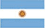

協力：国際ゲーム開発者協会日本（IGDA日本）
センス・オブ・ワンダーナイト2016
DOBOTONE
Videogamo 〔アルゼンチン〕
- 1: ゲーム制作に携わることになった経緯はどうだったのでしょうか
- We started making games together in 2010. We made a couple of small web “music-video” games for rock bands, but our first big game was NAVE Arcade, a one-of-a-kind black and white space shooter arcade cabinet game, that tours around the world. The only way you can play the game is in it's orginigal arcade machine and it has been touring since October 2012 with more that a hundred presentations at parties, bars, museums, conventions, schools and in the street. We've made three world tournaments so far and we've been saving the scores since day one.
- 2: SOWNにエントリーしたゲームの制作（完成までではなく、ゼロから発表の時点まで）にどれくらい時間がかかりましたか？
- DOBOTONE is still in progress, but we started playing around with the idea since later 2012. We first made a couple of games and last year we started to work on the console itself. We've made aroung 8 games so far, but we're planning on making at least 20 or 30.
- 3: どうやってゲームのアイディアを思いついたのですか？
- Back in 2012, one week after the release of NAVE Arcade (our one-of-a-kind traveling arcade game project), Maxi started fooling around with some arcade buttons we hadn't use. He came up with the idea of connecting those buttons to the computer and making some games, just for us and our friends, which we could play with two-buttons-only controllers and no joysticks. Then he made some more hardware tests, but we didn't really start working on the games at the time. A couple of years later, we had the chance of building a whole new arcade cabinet game for an exposition, with external funding, and we said "let's make DOBOTONE a 4-player arcade cabinet!", but it was too expensive (because of the 60'' led screen we wanted to use). So then we said "let's make just a console without the big screen, so you can plug it anywhere!"... The external funding never happened, but the idea stayed.
We designed DOBOTONE as a system specially thought for parties and the needs that arise from them. A system players can easily relate to (even when they're drunk), choose games as fast as they can and have the possibility of fooling around with the console itself, by tweaking some of the core variables. We decided to establish a set of rules for the games that totally relayed on intuitiveness, as we wanted the players to instantly understand what each game was about. No time for tutorials. No time to realize who is who. Just press the buttons and play. Narrowing part of the core variables of the design, such as the two-button controller’s limits, allowed other areas of the gameplay to grow in unexpected ways. We also wanted the console to be a very present device, as we wanted the players to interact with it in a different way than with modern consoles. The central control board, allows them to play with speed, gravity, zoom, visual glitching and, of course, sound fx and music volumes, without having to get into any in-game menu that could interfere with the desired experience. We also added two special arrow buttons to navigate through the games without any kind of loading times and four personal buttons to turn each player on and off in no time. You can also play one game repeatedly or choose "random" which automatically selects one random game after the other. Games include some classic genres like fighting, puzzle or racing, but also some unclassifiable weird experiments, all through the two-button control scheme filter.
With all these decisions we are suggesting the players not only to enjoy the games in a traditional way but also to kind of "hack" gameplay and, because everyone has access to that, even people who are not actively using the console, to add a sense of anarchy to the whole thing. - 4: どの開発ツールを使いましたか？
- For the software application we used Unity, Photoshop and Nuendo. For hardware we used Fritzing to design some of the interal PCBs, and Sublime Text + Simple IDE for the development and programming of the Parallax P8X32A board. We laser-cut the structure of the machine, which was previously designed in Illustrator, on the base of the previous prototype, that was made in cardboard.
- 5: 以前作ったゲームとプレゼンした作品の大きな違いはなんでしょうか？
- Well, we've never made a video game console before, so it is a big change in itself. It's also our most experimental project. The Game Remix features allow us to try lots of stuff of game design and learn a lot about the matter. It is also our first multiplayer experience and that's incredibly fun.
- 6: ゲーム開発者としての今の目標は何ですか？
- This is not something original to say but we just want to make the games we want to play, the way we want to play them. And we know that there's a many of people like us that want to play that kind of stuff. Right now we're really into dedicated hardware games, alternative controllers and live social experiences. After making NAVE, we discovered that we loved building both software and hardware and we started to come up with many ideas, so now we're working towards making them happen.
- 7: SOWNでのプレゼンテーションにあたり、ファイナリストに選ばれたことや抱負など、来場予定のオーディエンスに向けたメッセージをお願いします。
- If there's any crazy idea for a game that you come up with, don't censor yourself. Make it. Show it. Fool around with it. Improve it. If you want to play it, there will be other people like you that will want to play it. And if you're lucky enough you'll find people that it's not like you that will also want to play it... Now go and do it!